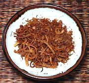

|
Fried Shallots / Shallot OilSoutheast Asia - [Hom Daeng Jiaw / Naam Man Hom Daeng (Thailand)] | ||||
| Makes: Effort: Sched: DoAhead: |
8 oz vol ** 25 min Yes |
Crisply fried Shallots are a very popular garnish in Southeast Asia, and a very tasty garnish it is. How much oil you need depends on whether you just want fried shallots or if you also want a flavored oil for stir frying, salads and the like. | |||
| This recipe makes both fried shallots and oil. You end up with enough Fried Shallots to fill an 8 oz jar and a bit less than a cup of Shallot Oil. A wok is the best pan for frying them. | |||||
|
14 1 |
oz c |
Shallots (1) Oil (2) |
Make: - (25 min work - 25 min to 6 hours (see Note-3).
|